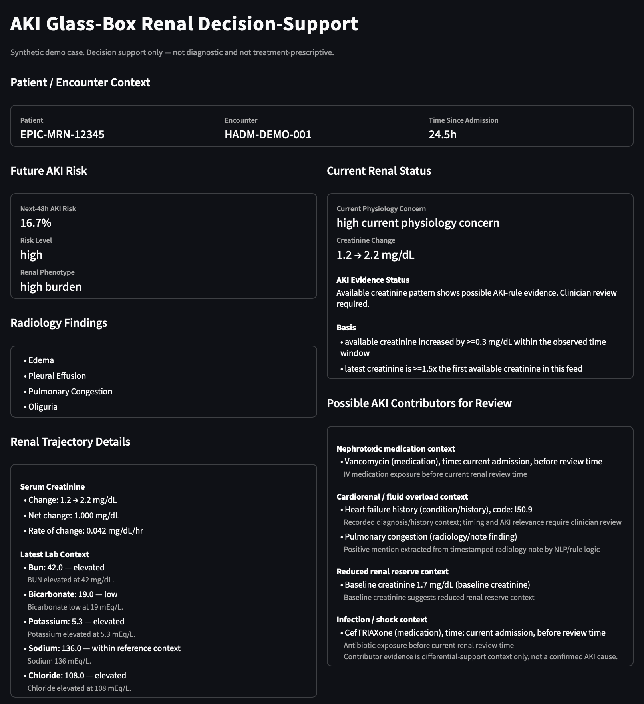

Interpretable renal trajectory and decision-support platform.
Acute Kidney Injury (AKI) is a serious and potentially life-threatening condition associated with increased morbidity, mortality, and healthcare costs. According to the International Society of Nephrology's 0by25 Initiative and subsequent AKI research, many cases are first encountered by non-specialist clinicians, where early recognition can be difficult because relevant information is distributed across laboratory results, medications, notes, urine output, and overall patient context. Studies have shown that increasing AKI severity is strongly associated with increased mortality, while no consistently effective treatment for established AKI has demonstrated clear clinical benefit. As a result, timely identification of high-risk patients and clearer interpretation of evolving renal status remain critical opportunities for prevention-focused management.
AKI Glass Box uses machine-learning models to estimate next-48-hour AKI risk while simultaneously summarizing the evidence behind that prediction. The platform synthesizes renal lab trajectories, note-derived findings, and patient context into an interpretable clinician-facing view designed to support reasoning under uncertainty. In addition to risk estimation, the system provides contextual differential support by highlighting possible contributing factors—such as nephrotoxin exposure, infection-related findings, fluid-status signals, and other renal-relevant context—allowing clinicians to inspect the reasoning behind the output rather than relying on a risk score alone.
Sample clinician-facing output will be shown here.

Frederick Ansong
Computer Science | Pre-Med Minor
Email: your-email@example.com
LinkedIn: your-linkedin-url